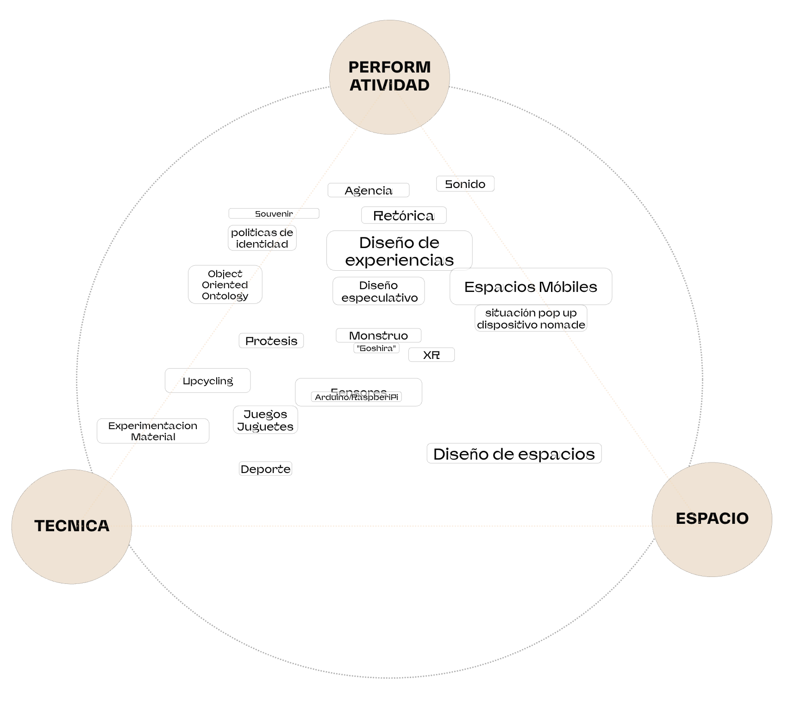

COMPUTACIÓN AVANZADA
Eduardo Perez Infante
Perfil
- Disciplina / formación
- Arquitecto, Estudios de las Comunicaciones.
- Qué hago hoy
- Producción Técnica y Artística, Administración.
- Qué me gustaría aprender en este curso
- Expandir mi comprensión de lo que es un artefacto de diseño. Me interesa la capacidad que estas herramientas tienen para capturar fenómenos y producir sistemas de respuesta.

Intereses
- Dimensión performativa del diseño.
- Ciclismo, natación y tenis. Me interesa la práctica de estos deportes y la métrica deportiva.
- El juego como fenómeno cultural y como entrada al diseño.
- Comportamiento humano, neurociencia y biohacking.
Una pregunta que me interesa explorar
¿Qué artefactos de diseño nos permiten sensar, visualizar y comprender un fenómeno fisiológico complejo como la respuesta ante el estrés o el dolor emocional?
En el contexto temático del duelo animal, ¿qué posibles respuestas permiten las herramientas de computación avanzada en su capacidad para generar sistemas en base a datos? ¿Puede esta capacidad de sensibilidad y responsabilidad contribuir a un diseño sensible y responsable?